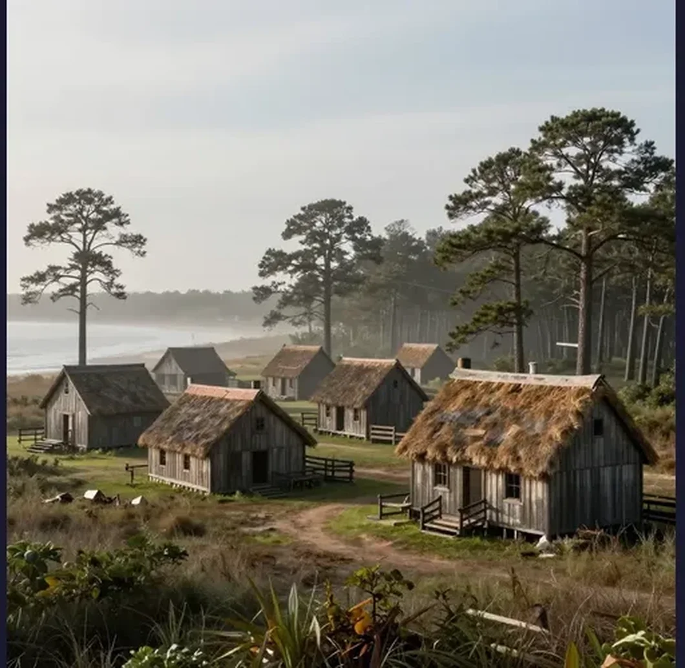

The Lost Colony of Roanoke: America's Oldest Unsolved Mystery and the Word Carved in Wood

In August 1590, an English governor named John White stepped off a ship onto the sandy shores of Roanoke Island in present-day North Carolina, expecting to find his daughter, his granddaughter, and the 115 other English colonists he had left behind three years earlier. He found nothing. The settlement was deserted. The houses had been dismantled. There were no bodies, no signs of violence, no evidence of a struggle. The only clues were two carvings: the word “CROATOAN” etched into a wooden post at the entrance to the palisade, and the letters “CRO” carved into a nearby tree. White knew what CROATOAN meant — it was the name of a nearby island, home to Manteo, a Croatan chief who had befriended the English. It was also the prearranged signal: if the colonists had to abandon the settlement, they would carve their destination into a tree. But before White could mount a search of Croatoan Island, a fierce storm forced his ships back to sea. He never returned. The fate of the Lost Colony of Roanoke — 117 men, women, and children who vanished from the edge of the known world — has remained unsolved for more than four centuries. It is America’s oldest cold case, and despite modern archaeology, genetic testing, and satellite imagery, we still do not know with certainty what happened to them.
The story of the Lost Colony is not just a mystery. It is the founding myth of English America — a tale of ambition, hubris, bad luck, and the brutal realities of colonization in the sixteenth century. It involves Sir Walter Raleigh’s dream of a New World empire, the first English child born on American soil, a devastating war with Spain that stranded the colonists without supplies for three years, and a single carved word that has launched a thousand theories. The latest research — including the discovery of a hidden symbol on a sixteenth-century map and DNA analysis of potential descendants — has brought us closer than ever to an answer. But “closer than ever” is not the same as “certain,” and the Lost Colony continues to guard its secrets with the same stubborn silence that greeted John White on that August day in 1590.
The Roanoke venture was the brainchild of Sir Walter Raleigh, the charismatic courtier, explorer, and favorite of Queen Elizabeth I. In 1584, Raleigh received a royal patent authorizing him to establish a colony in North America, and he wasted no time. He dispatched a reconnaissance expedition under Philip Amadas and Arthur Barlowe, who explored the Outer Banks region of what is now North Carolina and returned with glowing reports of a lush, fertile land inhabited by friendly Native Americans. Elizabeth was so pleased that she named the entire region “Virginia” in honor of her virgin status.
The first actual colonization attempt came in 1585, when Raleigh sent approximately 108 men to Roanoke Island under the command of Ralph Lane. The colony was a disaster from the start. The settlers were largely soldiers, not farmers, and they arrived too late in the season to plant crops. They depended on the local Algonquian peoples for food, a dependence that quickly soured into hostility when the English demanded supplies at sword-point. When Sir Francis Drake’s fleet arrived in June 1586 after raiding Spanish settlements in the Caribbean, the starving colonists begged to be taken home. Lane reluctantly agreed. The first Roanoke colony had lasted less than a year.
Raleigh was undeterred. In 1587, he organized a second expedition — this time with a different strategy. Instead of soldiers, he recruited families: men, women, and children who would build a permanent agricultural settlement. The expedition was led by John White, an artist and mapmaker who had accompanied the first voyage and who was deeply familiar with the region. White’s group consisted of 117 settlers, including his pregnant daughter Eleanor White Dare and her husband Ananias Dare. The plan was to establish the colony on the Chesapeake Bay, a more hospitable location to the north, but the expedition’s pilot refused to sail further than Roanoke, apparently because he was eager to begin a privateering mission against Spanish shipping. White and the colonists were stranded on Roanoke Island against their will.
On August 18, 1587, just weeks after the colonists arrived at Roanoke, Eleanor Dare gave birth to a daughter — Virginia Dare. She was the first English child born in the Americas, and her name entered American folklore as a symbol of the Lost Colony. She was approximately three years old when John White returned to find the colony abandoned. Her fate — whether she died on Roanoke, perished at sea, grew up among Native Americans, or lived and died in obscurity — is the emotional heart of the Lost Colony mystery. John White sailed back to England in late August 1587, just weeks after Virginia Dare’s birth, to secure additional supplies and recruits for the struggling colony. He intended to return within months. He did not return for three years. The cause of the delay was the outbreak of war between England and Spain in 1588. Queen Elizabeth ordered all available ships held in England for defense against the Spanish Armada, and no vessels were available for colonial resupply. White managed to commission two small ships for a relief voyage in 1588, but they were attacked by French pirates off the coast of France, and the expedition was forced to turn back. It was not until March 1590 that White finally secured passage on a privateering expedition heading toward the Caribbean, which agreed to stop at Roanoke on its return journey.
When White finally reached Roanoke Island on August 18, 1590 — his granddaughter’s third birthday — he found a settlement that had been carefully and deliberately abandoned. The colonists had dismantled their houses and taken the building materials with them. A defensive palisade had been constructed around the site. The word “CROATOAN” was carved into one of the palisade posts in large, clear letters. On a tree near the entrance, the letters “CRO” were visible. White later wrote that he was “greatly joyed” to see the word CROATOAN, because before he left in 1587, he had instructed the colonists to carve the name of their destination if they were forced to leave. If they were leaving under duress, they were to add a cross above the name. There was no cross above CROATOAN. The colonists, it seemed, had left voluntarily and gone to Croatoan Island (present-day Hatteras Island) to live with Manteo’s people.
Yet White never reached Croatoan Island. According to his own account, the ships’ captains insisted on sailing south to investigate a supposed wreck they had spotted — a potential prize of salvage goods. A fierce storm then blew up, damaging one of the ships and forcing the expedition to abandon the search and return to the Caribbean. White was devastated. He wrote that he would have searched Croatoan “with all the means I could” if the weather and the ships’ captains had permitted. But the moment passed, and White — who was by now an old man in failing health — never returned to America. He died in England sometime after 1593, never knowing what had happened to his daughter, his son-in-law, or his granddaughter.
For centuries, the investigation of the Lost Colony was largely a matter of historical speculation. That changed dramatically in 2012, when researchers from the First Colony Foundation examined a sixteenth-century map created by John White himself — known as the “La Virginea Pars” map, now held at the British Museum — and discovered something extraordinary. Underneath two patches of paper that had been glued over the map’s surface, they found a hidden symbol: a four-pointed star or lozenge marking a location at the head of the Albemarle Sound, near present-day Edenton, North Carolina. In sixteenth-century cartography, such symbols typically indicated the location of a fort. The researchers called the location “Site X.” The discovery suggested that Raleigh had a contingency plan — a second, secret location where the colonists might be directed if Roanoke proved untenable.
In 2015, archaeologists from the First Colony Foundation began excavating at Site X and found exactly what they were hoping for: English artifacts dating to the late sixteenth century, including fragments of Surrey-Hampshire border ware (a distinctive type of English pottery), a copper aglet (a lace tip used in Elizabethan clothing), and other items consistent with the presence of Roanoke-era colonists. The artifacts were found alongside Native American pottery, suggesting a period of cohabitation or trade between the English and local Algonquian peoples.
The most widely supported theory, consistent with the CROATOAN carving and with later reports from Jamestown settlers who heard stories of Englishmen living among Native American communities to the south and west, is that the colonists moved inland in two or more groups and were gradually absorbed into local Native American communities. Some may have died of disease or violence. Some may have lived long enough to have children, and those children may have grown up speaking Algonquian, not English, their European ancestry visible only in their features and their surnames. Since 2005, researchers associated with the Lost Colony DNA Projects have been attempting to use genetic genealogy to identify descendants. The most promising avenue involves the Lumbee Tribe of North Carolina — a Native American community centered in Robeson County, many of whose members have European physical characteristics and family surnames that match those of the Lost Colonists. DNA testing has shown that some Lumbee men carry European Y-chromosome haplogroups consistent with descent from English male settlers, though proving a direct connection to the Lost Colony specifically remains scientifically challenging.
The Lost Colony of Roanoke is a mystery that refuses to die — not because the answer is unknowable, but because the question is so deeply embedded in the American psyche that solving it would feel like losing something essential. The image of John White standing in an empty clearing, staring at a single carved word, is the founding image of English America: a man who came looking for his family and found only silence. The most likely explanation, supported by the CROATOAN carving, the Site X archaeology, and the later Jamestown reports, is that the colonists moved inland and were gradually assimilated into local Native American communities — assimilation through necessity, not conquest. The final answer may come from DNA: a genetic signature that links a modern Lumbee family to a specific colonist, closing the loop on a 430-year-old question. Until that day, the Lost Colony remains what it has always been: a question carved into a post, a word on a tree, and a silence that stretches across four centuries of American history. They came. They settled. They vanished. And America has been trying to find them ever since.
References & Further Reading
Wikipedia: Virginia Dare — Biography of the first English child born in the Americas
Wikipedia: Dare Stones — The controversial inscribed stones purporting to tell the colonists' fate
📚 Recommended Reading: A Kingdom Strange: The Brief and Tragic History of the Lost Colony of Roanoke by James Horn (on Amazon) — As an Amazon Associate, we earn from qualifying purchases.
Editorial note: The fate of the Roanoke colonists remains unresolved. Key sources include John White's accounts, the La Virginea Pars map, and the First Colony Foundation's Site X excavations. See our Editorial Policy.